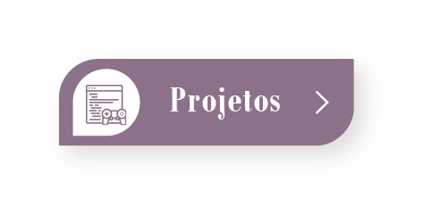

Dead Attack

Compre armas e desbloqueie novas áreas enquanto sobrevive uma onda sem fim de zumbis.
Criado durante o curso de Desenvolvedor Unity do Lucas Busato, este jogo é até o momento, o mais complexo que fiz, contando com inimigos com inteligência artificial, diversas armas com diferentes características, interação do jogador com o cenário, e sistema de pontuação com os abates de zumbis.

2048

Deslize blocos numerados para juntá-los até obter o bloco de número 2048.
Esta foi minha primeira tentativa bem sucedida de criar um jogo, ainda antes de qualquer curso especializado.
Apesar de só ter conseguido terminar ele depois do curso na EBAC...
Projeto Reciclagem

Um projeto que criei para aplicar o aprendizado do pacote NavMesh da Unity.
É um jogo estilo idle, onde o jogador comprou recentemente um galpão de reciclagem e terá de consertá-lo, contratar mais funcionários, e melhorar o local para obter mais pacotes e avançar no progresso.
OBS.: o jogo NÃO está no estágio jogável ainda!